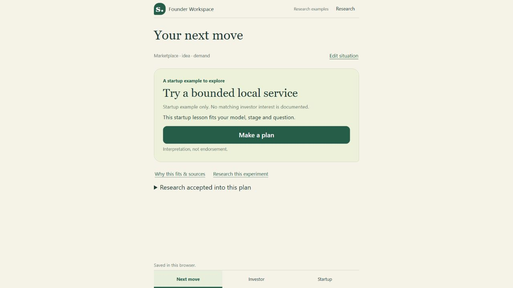

What to protect before a seed round
How founders can decide what deserves attention, plan around an upcoming investor pitch, and sequence filing and disclosure on a limited budget.
Pitching-before-filing guideAndrew Leung is a U.S. registered patent agent and the founder of W&Patent. He has built companies and helps early-stage founders decide what to protect first, when to file, and what can wait as they prepare for a pitch, demo, or launch. He is an OpenFor member.
How founders can decide what deserves attention, plan around an upcoming investor pitch, and sequence filing and disclosure on a limited budget.
Pitching-before-filing guideA walkthrough of Startup Tarot, a free browser tool that puts published investor criteria and dated startup examples alongside a founder’s question. A sample scenario shows how to pick a small experiment and inspect the sources.
Explore Startup TarotWhat to protect first, what to share in a demo, and what can wait while the product is still changing. Andrew can discuss illustrative scenarios for hardware or deep-tech founders.
Startup patent strategy guide